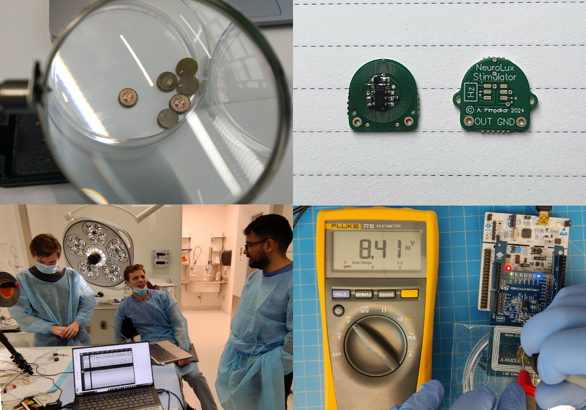

Boundaries of Neural Interfaces
Harnessing Strengths of Engineering and Biology
Overview
Nerve stimulation paradigms to impede cancer metastasis, and surgical solutions to tackle urinary incontinence.
Advisor
Timeline
May 2024 to Aug 2024

Overview
Broad Focii at Harvard
Over the summer at Harvard, my broad focus was exploring the reciprocal interactions between the nervous system and cancer, aiming to uncover novel mechanisms and advance clinical treatments. This interdisciplinary research leveraged principles from neuroengineering and oncology to understand how neural activity influences cancer progression and therapeutic outcomes.
I also tested a novel surgical technique for treating stress urinary incontinence using fully endogenous muscle grafts, offering a minimally invasive and potentially more effective alternative to existing urethral devices. This approach, validated through pilot surgeries in animal models, demonstrated promising therapeutic potential by enabling voluntary urethral opening and restoring urinary control.
Novel Angles
Neural Interfaces for Cancer
Cancer Neuroscience is an emerging field with the potential to transform our understanding of tumor biology and open new therapeutic frontiers. At Harvard, I explored how modulating peripheral nerve activity could influence cancer progression, focusing on glioblastoma and melanoma. In preclinical studies, nerve stimulation demonstrated promising correlations with tumor growth and metastasis, revealing potential pathways for intervention. This work highlights a potentially powerful approach to addressing aggressive cancers.
Biohybrid Organs
Solving Urinary Incontinence
Urinary incontinence, particularly stress urinary incontinence, affects millions of individuals worldwide, limiting their independence and significantly impacting their quality of life. Current treatments, such as urethral slings or neural stimulators, often have limited efficacy, involve long procedures, or fail to address the root causes of the condition. At Harvard, I developed a short yet effective surgical technique using fully endogenous muscle grafts to address this gap by creating a dynamic retractor mechanism for voluntary urethral control. In animal pilot studies, this approach demonstrated the potential to restore functional urinary control while offering advantages over existing devices.
Interested?
Further Details
If you are interested in learning more about my research at Harvard, please feel free to reach out to me! I would be happy to discuss my work in more detail.